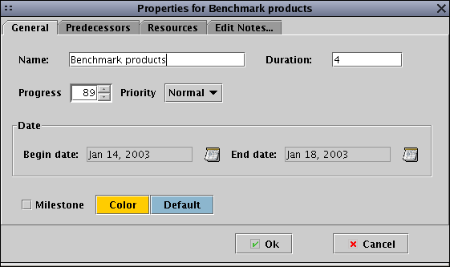

GanttProject - Editing properties
For each task you can edit the properties in a dialog box, by using the
Properties menu, or by double-clicking on either the task's name, or it's Gantt bar.
The properties box allows you to edit the name of the task, the duration, the percent complete,
the start and end dates, the color on the chart, the priority, and the explanatory notes.
You can also define the relationship between of the task by choosing different predecessors.
You do this by selecting the second panel of the box
and choosing the name of the predecessor task, and the type of relationship.
